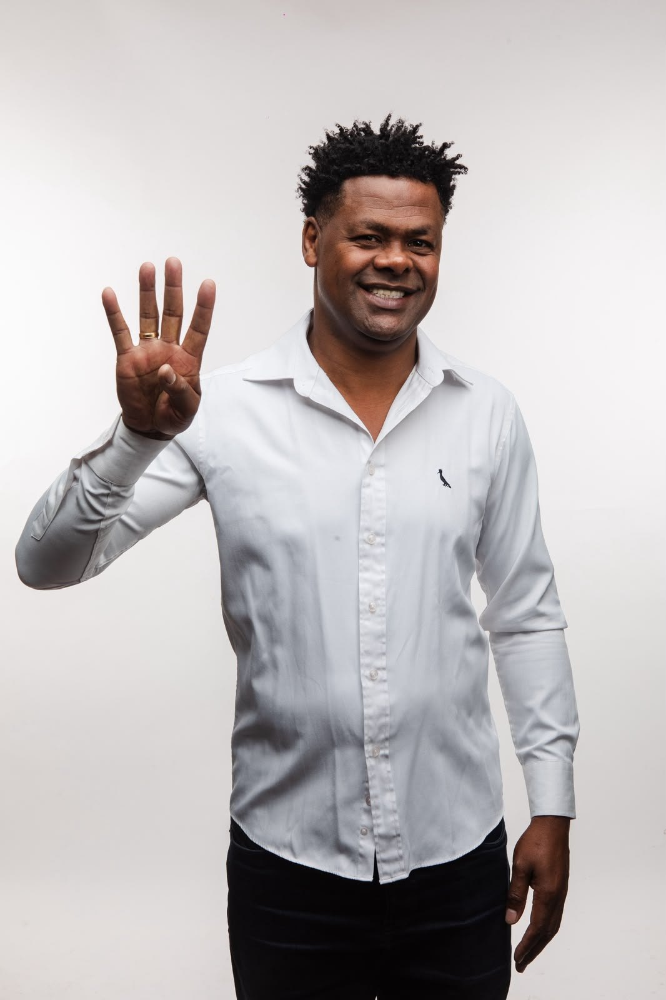

Uma campanha feita pelo coração.
Cuidar das pessoas sempre fez parte da história de Samuel. Agora você também pode fazer parte dessa caminhada.
Participe
Como você quer participar?
Criar minha foto com Samuel
Coloque sua foto na campanha e mostre que você também caminha com Samuel.
Criar agora →Amigos do Samuel
Entre para o grupo de pessoas que constroem essa caminhada por perto.
Fazer parte →Indicar Samuel
Apresente Samuel para alguém da sua família ou para um amigo.
Indicar pelo WhatsApp →Quero receber o Samuel
Convide Samuel para o seu bairro, comércio, associação ou um encontro com amigos.
Enviar convite →Acompanhe o dia a dia da caminhada em @samuelenfermeiro.
Seguir →Falar com a equipe
Fale direto pelo WhatsApp oficial da campanha.
Abrir WhatsApp →Gente de verdade
Amigos do Samuel
Uma campanha construída por pessoas que acreditam que cuidar, ouvir e estar presente ainda fazem diferença.
Convite
Samuel perto de você.
Quer conversar com Samuel no seu bairro, comércio, entidade, associação, comunidade ou em um encontro com amigos e família? Envie seu convite.

Conheça Samuel
Enfermeiro por profissão.
Cuidar das pessoas por propósito.
Samuel é enfermeiro de formação. Foi na enfermagem que construiu o jeito de trabalhar que carrega até hoje: escutar antes de agir, chegar perto e acompanhar de verdade quem precisa.
“A enfermagem me ensinou algo que nunca mais saiu de mim: antes de tentar resolver o problema de alguém, você precisa saber ouvir.”
Mauá é o centro dessa história. É onde estão a família, as ruas e as pessoas que o conheceram muito antes de qualquer candidatura. Foi como vereador na cidade que a trajetória política começou, e na Secretaria de Proteção e Defesa das Pessoas com Deficiência que o trabalho se aproximou ainda mais das famílias.
Direitos
Informação também é uma forma de cuidar.
Conhecer seus direitos pode mudar uma história. Reunimos informações importantes para ajudar você e sua família a saber onde procurar orientação e como acessar serviços e benefícios.
Conteúdo informativo. A concessão de benefícios e serviços depende dos critérios e da análise dos órgãos públicos responsáveis.
As informações desta seção resumem o que está publicado nas fontes oficiais indicadas em cada assunto e podem mudar. Antes de tomar qualquer decisão, consulte o órgão responsável pelo botão Consultar fonte oficial. A campanha não concede, intermedeia nem garante benefícios públicos.
Faça parte dessa caminhada.
Toda campanha feita pelo coração precisa de gente por perto. Você pode participar do seu jeito: divulgando, ajudando no seu bairro ou simplesmente apresentando Samuel para alguém.